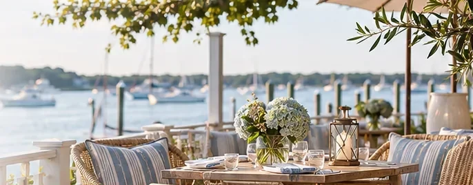

COASTAL SEAFOOD & SPIRITSDining by
Dining by
the water.
Fresh flavors, salt air, and evenings worth gathering for.
Explore this season
Reserve your table
THE SEASONAL CATCH
Private dining What the season brings.
A calmer, lifestyle-first dining experience with useful booking controls close by.
THE ATMOSPHERE
The saltwater experience.
An imagery-led arrangement for showcasing a location, cuisine, and events.
PRIVATE EVENTS
Gather by the water.
Occasions, guest counts, and service details can be captured by a dedicated consultation form.
Discuss a private event
Explore the sample inquiry process. This form never sends, saves, or schedules anything.